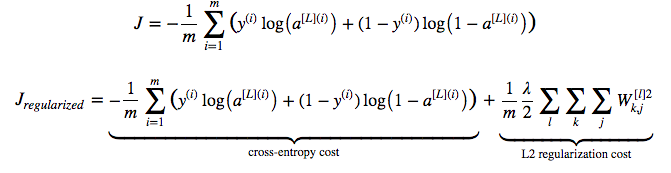
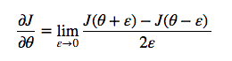
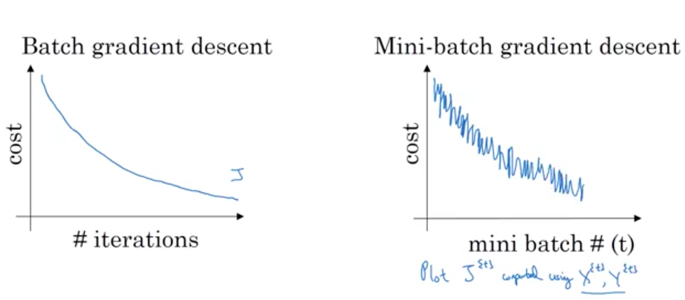
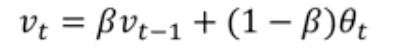
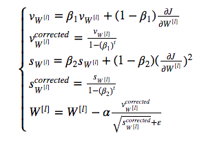
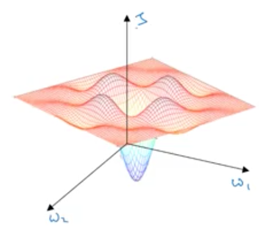
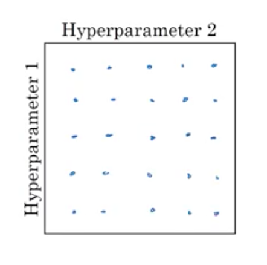
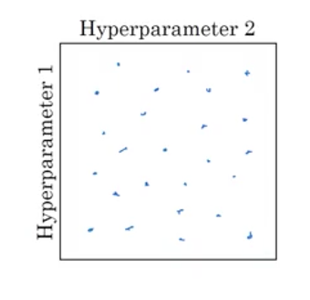
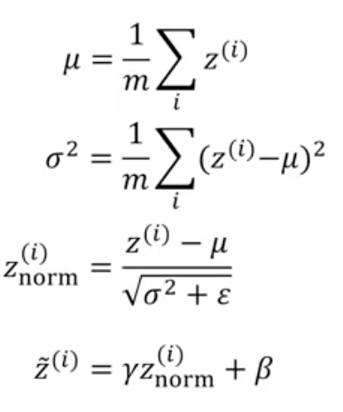

Dev and Test sets must come from same distribution
Since Dev and Test sets just need to be large enough to ensure statistical accuracy, and we apply deep learning to problems where there is lot of data, a split like 98%, 1%, 1% between training, dev and test set is usually good.
Test set can be sometimes omitted too. It is meant to get an unbiased estimate of algorithms performance in the real world

Bias is underfitting to training data. So, accuracy in training data will be small if your algorithm has high bias.
Variance is overfitting to training data. So, in case of high variance, accuracy in dev set will be much worse compared to that in training data.
For reference, Bayes' error is the absolute best an algorithm can do. It is close to human level performance for perception related tasks, because humans are very good at perception related tasks. For other tasks it is just a theory and hard to determine. We say that bias is high if training error is more than Bayes' error.
When developing a learning algorithm, first you should get low bias, then aim for low variance.
For handling bias, techniques are bigger network or different architecture. For handling high variance, techniques are more data, or regularization, or different neural net architecture.
Incentivize your model to have smaller weights. Reduces overfitting to training data.
Cost function before and after is:
Cross entropy term is called L2 norm. This process is also called L2-regularization.
Another intuition is that if you are using tanh activation function, and since $tanh$ is linear around $x = 0$, with L2 regularization, model will be very close to linear, and thus, simpler.
Randomly shutodown neurons in each iteration through each training eample.
For each layer, decide the probability with which neurons of that layer will survive. In each iteration through a training example, shutdown the neurons on a per layer basis according to this probability. If probability of neuron surviving is $keep\_prob$, you divide activations by $keep\_prob$ so that value of $z$ for next layer is not impacted much.
This technique is called inverted dropout.
At dev/test time, we do not dropout.
Why does dropout regularization work?
Actually dropout can be shown to be a form of L2-regularization where there are different weights given to different neurons.
Used a lot in computer vision, because you almost never have enough data.
Cost function is no longer deterministic, so hard to debug. You may wish to turn off dropout first, complete implementation, and then turn on dropout.
Data augmentation: e.g., flip the image and add to traininge example, take random crops or rotate the image. They do not add as much info as brand new images.
Early stopping. Plot training set error as well as dev set error. Training set error will keep going down, but dev set error will start rising. You stop there.

Bad thing about this is that reducing bias and reducing variance have got intermingled.
Normalize inputs with mean 0 and variance 1
With deep neural networks, gradients may explode or vanish. More careful weight initialization can help. You init weight matrix of each layer $W$ such that its variance is $1/n$ where is $n$ is number of input features. You say $w^{[l]} = np.random.randn(shape) * np.sqrt(\frac{1}{n})$. It is called Xavier initialization. Sometimes $\sqrt{\frac{2}{n^{[l-1]} + n^{[l]}}}$ is also used.
Gradient checking. You can check if your gradient computation is correct by using following alternative approximation
Update gradients after each mini-batch, a batch of size 64 or 128 or 256. When mini batch is of size 1, process is called stochastic gradient descent. with a reasonable mini batch size, you get benefit of vectorization as well as converge faster.


When using mini batch gradient descent, the cost may not go down per iteration.
Exponentially weighted average is like this:
But this works bad for initial few examples. You can do better if you divide by $1 - \beta^{t}$
Knowing above, you can adjust $dW$ as per exponential smoothing, like this:

Idea behind RMS prop is that learning should proceed at similar rates for various weights.
Combines momentum with rms prop:
As you tend to minimal, you should learn at smaller rate.
$\alpha = \frac{1}{1 + decay rate * epoch num} \alpha_0$
There are several other formulae that you can use for decay.
Not very important.
Earlier people used to be afraid that algo may get stuck in local optima. They used to think of the situation like this.
Actually, in a high dimensional space, most optimal are saddle points, so you will not get stuck:

Local optima are not a problem, but plateaus are problem. Gradient may become very close to 0. So, learning can become very slow. This is where momentum, rms prop or adam can help you.
Learning rate is most important
Next:
After that:
If you use adam algorithm, default parametersof adam algorithm are good enough
How do you explore hyper parameter space?
If there were few parameters, you could explore points in grid like so.
But with many parameters, choose points at random, this way you get many values of all the parameters.
Coarse to fine: You search in the zone where you are finding lower cost values

If the range to search is very large, logarithmic sampling is better than linear scale. Eg. is alpha can be between 0.0001 and 1 and you have to choose 5 values, you should choose 0.0001, 0.001, 0.01, 0.1, 1
If the range is small but increasingly close to a number, logarithmic scale is used in a different way. Eg if can be between 0.9 and 1 you should 0.9, 0.99, 0.999, 0.9999 etc.
Pandas: babysit one model, change the parameters periodically and experiment. This is done if you have less computation resources.
Caviar: Train many models in parallel. Take the best.
Normalizing inputs can speed up learning. You normalize z across training examples so that in a deep neural net, the weights of layers are learnt faster.
Why batch normalization works
What $\mu$, $\sigma$ do we use for testing?. You keep an exponentially weight average of these quantities for mini batches while training.
Use softmax in last layer. Softmax generalizes logistic regression to multiple classes.